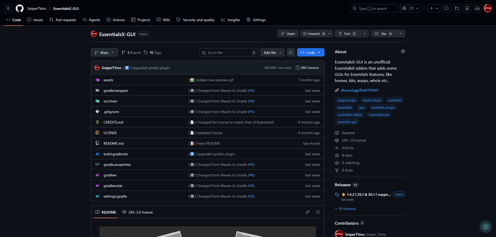

EssentialsX-GUI est un plugin Minecraft (serveurs Spigot/Paper) qui offre des interfaces graphiques conviviales pour gérer les fonctionnalités du plugin EssentialsX, l'un des plugins les plus utilisés de l'écosystème Minecraft. L'objectif est de faciliter la configuration et l'utilisation des commandes du serveur pour les administrateurs, sans avoir à mémoriser toutes les commandes en ligne.
En gérant mon propre serveur Minecraft, j'ai rapidement constaté que la configuration d'EssentialsX passait uniquement par des commandes en ligne ou des fichiers de configuration, ce qui peut être fastidieux pour les administrateurs peu à l'aise avec ce type d'outils. J'ai donc développé ce plugin pour proposer une alternative visuelle, directement dans le jeu.
Ce plugin m'a permis d'approfondir mes compétences en Java, notamment sur la manipulation de l'API Spigot, la gestion d'événements, et la persistance de données via SQL. C'est aussi mon premier projet publié et maintenu publiquement, avec un vrai retour d'utilisateurs à travers les téléchargements et les retours sur la documentation.